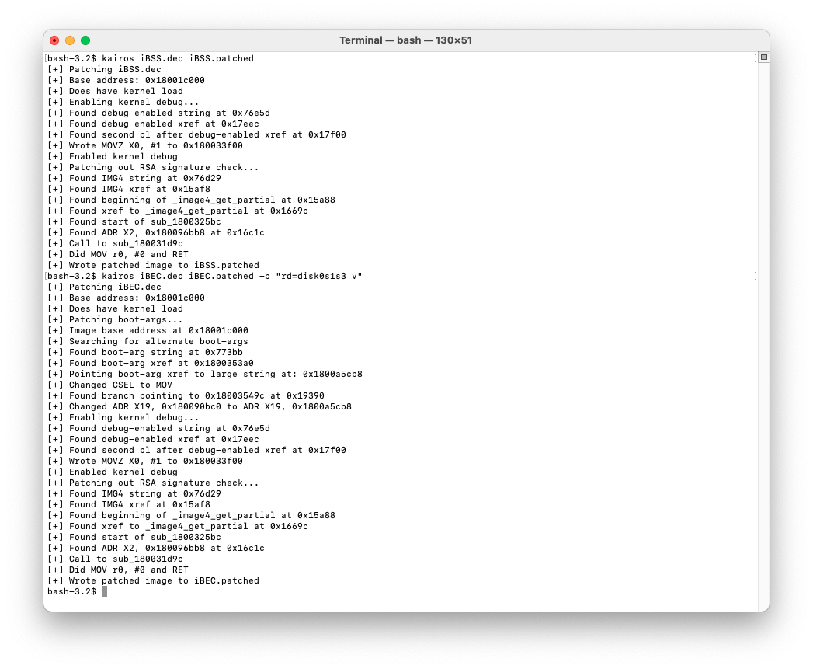

Patching Bootchain
Decrypt iBSS and iBEC:
Firmware keys and proper component names can be found here.
pyimg4 im4p extract -i iBSS.*.RELEASE.im4p -o iBSS.dec -k <iv+key>
pyimg4 im4p extract -i iBEC.*.RELEASE.im4p -o iBEC.dec -k <iv+key>
And patch signature checks using Kairos:kairos iBSS.dec iBSS.patched
Now pack into img4:
pyimg4 im4p create -i iBSS.patched -f ibss -o iBSS.im4p
pyimg4 img4 create -p iBSS.im4p -m IM4M -o iBSS.img4
Important: we need to create two patched iBEC files; One for booting the custom ramdisk, and one for booting the new system.
For booting the second iOS install, iBEC needs an arg which will point it towards the new partition. Add rd=disk0s1s3 (or your new system partition disk) and -v args to iBEC:kairos iBEC.dec iBEC.patched -b “rd=disk0s1s3 -v”
Note: If you don't want to have verbose, you can exclude the -v arg:
kairos iBEC.dec iBEC.patched -b “rd=disk0s1s3”
 For booting the custom ramdisk, add rd=md0 restore -v args to iBEC:kairos iBEC.dec iBECramdisk.patched -b “rd=md0 -restore -v”
Now pack them back into img4:pyimg4 im4p create -i iBEC.patched -f ibec -o iBEC.im4p
pyimg4 im4p create -i iBECramdisk.patched -f ibec -o iBECramdisk.im4p
pyimg4 img4 create -p iBEC.im4p -m IM4M -o iBEC.img4
pyimg4 img4 create -p iBECramdisk.im4p -m IM4M -o iBECramdisk.img4
Great! now there are two different iBEC files you have created. One for booting the ramdisk, and the other for booting the actual system later on.
Note: the rd argument in iBEC stands for "root device", or the target volume iBoot will try to start the system from. md0 always refers to a ramdisk in memory, and disk0s1sX is a disk partition.
Kernelcache
Pack devicetree into img4 with rkrn (RestoreKernelCache) tag. The kernelcache needs this tag, otherwise iBEC will refuse to see it as valid:
pyimg4 im4p extract -i kernelcache.release.* -o kcache.raw --no-decompress
pyimg4 im4p create -i kcache.raw -f rkrn -o kernelcache.im4p
pyimg4 img4 create -p kernelcache.im4p -m IM4M -o kernelcache.img4
DeviceTree
Pack devicetree into img4 with rdtr (RestoreDevicetree) tag. The devicetree needs this tag, otherwise iBEC will refuse to see it as valid:
pyimg4 im4p extract -i DeviceTree.XXXXap.im4p -o devicetree.raw
pyimg4 im4p create -i devicetree.raw -f rdtr -o devicetree.im4p
pyimg4 img4 create -p devicetree.im4p -m IM4M -o devicetree.img4
Done!